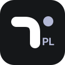
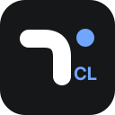
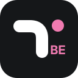
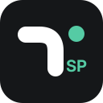
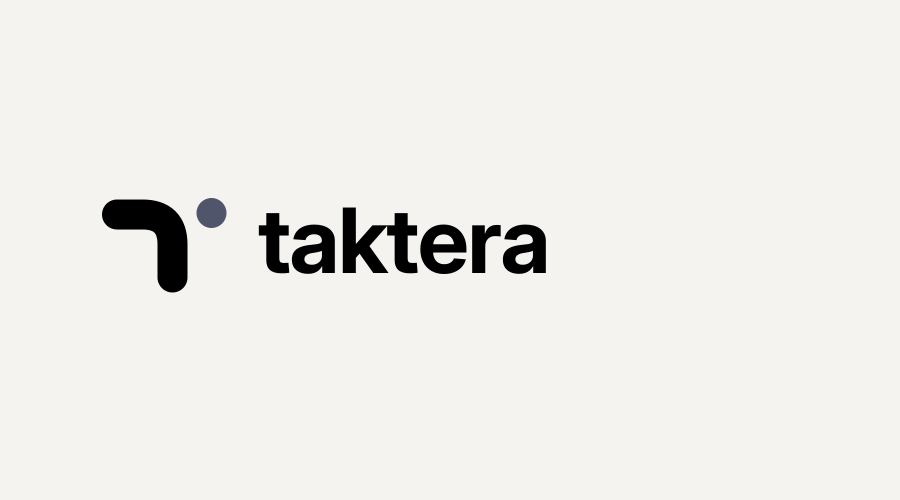
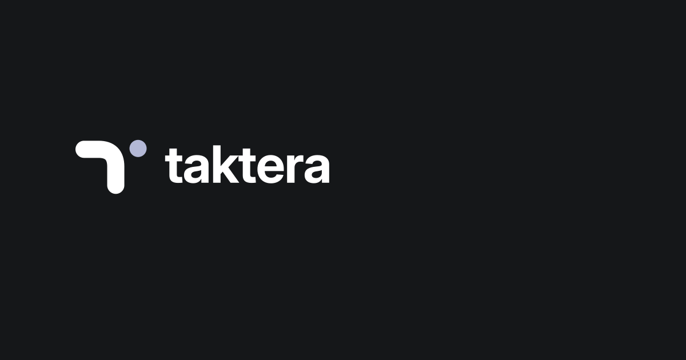

Одна форма.
Разные направления.
Брендбук и дизайн-код Taktera

Чёрный или белый знак.
Цветная точка. Цветное имя продукта.
Цветная точка. Цветное имя продукта.
PlatformClinicBeautySpaFitnessTravel
Брендбук и дизайн-код Taktera
Один силуэт во всех продуктах. Меняются только точка и название.
Слева: чёрный знак на светлой поверхности. Справа: белый знак и светлые акценты на тёмной. Названия всегда строчными буквами.
Форма из последнего выбранного макета: мягкий изгиб и круглые окончания.
Левое горизонтальное плечо плавно переходит в вертикальную стойку справа. Отдельная точка располагается справа вверху.
Правое плечо обычной заглавной T не добавляется. Контур не превращается в крест, щит или знак из четырёх элементов.
Рабочая область 88 × 74. Толщина штриха 20 единиц. Диаметр точки 20. Все экспорты строятся из одного SVG.
Векторная реконструкция по растровому образцу. SVG из этого пакета задаёт единые пропорции для внедрения.
Минимум один диаметр точки вокруг всей композиции. Не включать это поле в размер самого знака.
 16 px24 px32 px64 px
16 px24 px32 px64 px16 px - только favicon. От 24 px - знак в интерфейсе. Полная подпись: от 180 px по ширине; для печати - от 35 мм.
Яркие акценты на спокойной нейтральной основе.
| Направление | Светлый фон | Тёмный фон | Текст кнопки / контраст¹ |
|---|---|---|---|
| Platform Общая платформа | #50556B | #B3B8D6 | белый · 7.36:1 |
| Clinic Клиники и стоматология | #2368D1 | #70A6FF | белый · 5.29:1 |
| Beauty Салоны и эстетика | #C13B78 | #F17BB1 | белый · 5.04:1 |
| Spa SPA и wellness | #118569 | #55CBA4 | белый · 4.58:1 |
| Fitness Фитнес и спорт | #D52B35 | #FF6B75 | белый · 4.97:1 |
| Travel Туризм и путешествия | #D4A600 | #FFD43B | тёмный · 7.92:1 |
¹ Контраст текста на акцентной кнопке. Travel: жёлтый #D4A600 для бренда и заливок, тёмный #151719 для текста кнопки; мелкие ссылки и фокус на светлом фоне - #806300. Точка и имя в логотипе всегда одного цвета. Точные HEX заданы в токенах.
Различаем имя компании и имя отдельного продукта.
Знак и слово taktera чёрные или белые. Точка - акцент Platform. Для сайта компании, юридических и общих материалов.
Знак чёрный или белый. Точка и clinic - один продуктовый цвет. В английской краткой версии: clinic. Русская полная версия: taktera клиника; слово taktera чёрное или белое.
Inter объединяет логотипы, интерфейс и коммуникации.
Inter Bold 700. Оптические интервалы зафиксированы в векторных контурах. Используйте готовые SVG; не собирайте логотип из текста вручную.
400 - основной текст; 600 - действия и подзаголовки; 700 - акценты. Для денежных значений и таблиц включать табличные цифры.
| Роль | Размер / строка |
|---|---|
| Крупный заголовок | 48 / 52 |
| H1 / H2 | 30 / 36 · 24 / 30 |
| H3 / основной текст | 18 / 24 · 14 / 21 |
| Подпись | 12 / 16 |
Inter включён с OFL-лицензией. Для ID и кода сохраняется JetBrains Mono, при отсутствии - системный monospace. Этот дополнительный шрифт в пакет не включён.
Общие компоненты и ритм. Цвет помогает ориентироваться.
Точка, название, основное действие, выбранный пункт и фокус. Таблицы, расписание и большие рабочие поверхности остаются нейтральными.
Для лёгких подложек можно применять слабый оттенок акцента, но он не заменяет контрастный фокус или подпись.
Ошибка, успех и предупреждение получают отдельные семантические токены. Красный Fitness не означает ошибку, жёлтый Travel - предупреждение. Статус всегда сопровождается текстом или иконкой.
Это правила бренд-системы. Пакет не меняет код работающего приложения и не заменяет проверку реальных экранов, состояний и доступности.
Светлые и тёмные акценты имеют разные роли.
Акцент #2368D1. Белый текст на акценте: 5.29:1.
У Clinic текст кнопки белый. У Travel жёлтая кнопка с тёмным текстом; ссылки и фокус на светлом фоне - #806300.
Акцент #70A6FF. На фоне #151719: 7.35:1.
На светлой акцентной кнопке - тёмный текст #151719. Не переносить белую надпись со светлой темы автоматически.
| Продукт | Акцент на #151719 | Белый знак на #151719 |
|---|---|---|
| Platform | 9.19:1 | 17.97:1 |
| Clinic | 7.35:1 | 17.97:1 |
| Beauty | 7.02:1 | 17.97:1 |
| Spa | 8.96:1 | 17.97:1 |
| Fitness | 6.51:1 | 17.97:1 |
| Travel | 12.61:1 | 17.97:1 |
Проверены только перечисленные цветовые пары. Это не аудит доступности всего интерфейса. У состояний hover, disabled, selected и ошибок требуется отдельная проверка в приложении.
Общий фирменный знак. Понятные названия направлений.

Платформа · PL
Клиника · CL
Красота · BE
Спа · SPНа нейтральной подложке - чёрный или белый знак, цветная точка и цветная метка под ней. В меню выбора обязательно указывать название: один цвет не должен быть единственным различием продуктов.
Метки: PL / CL / BE / SP / FI / TR. От 64 px метка используется как дополнительное различие. В favicon 16 / 24 px метка убрана; в 32 / 48 px на неё нельзя полагаться без названия.
Lucide: 16 / 20 / 24 / 32 px, currentColor, strokeWidth 1.5. Кнопка только с иконкой получает доступное имя.
Для контекста: Stethoscope, Sparkles, Waves, Dumbbell, Plane. Эти пиктограммы не заменяют фирменный знак.
Карта имён и React registry перенесены из v2.2. Для touch рекомендована область нажатия 44 × 44 px; для компактного desktop - минимум 32 × 32 px.
Те же пропорции и цвета во всех носителях.


Шаблоны сохранены как редактируемые SVG с контурами букв. Для печати дизайнер дополняет контакты, вылеты и цветовой профиль типографии. Декоративный изгиб и точка допустимы на обложке; за рабочими таблицами и формами они не размещаются.
Редакция 3.2 добавляет русские подписи и метки в иконках; палитра и геометрия сохранены.
| Было | Теперь |
|---|---|
| Четыре лепестка / модуля Nexus | Мягкий изогнутый знак из последнего выбранного макета |
| Цветной основной знак | Основной знак только чёрный или белый |
| Разные трактовки продуктовых логотипов | Один знак + цветная точка + цветное имя продукта |
| Fitness - терракота; Travel - бирюзовый | Fitness - красный; Travel - жёлтый, с адаптацией к теме |
| SVG с зависимостью от шрифтов на устройстве | Контуры букв в SVG, шрифт Inter с лицензией в комплекте |
| Иллюстрации с неодинаковой геометрией | Один векторный мастер для всех экспортов |
Последний присланный файл: exec-2c59ddad-28a1-490b-bddb-32688ba23231.png. На нём написано «03 / Ясная T»; ориентиром является сам силуэт, а не название варианта.
Последнее уточнение пользователя → эта редакция → рабочие SVG и токены. Старые концепции, «Собранная T» и вариант с обычной заглавной T не используются как мастер.
Готовые материалы и последовательность обновления.
Карта точек интеграции в 07_migration основана на v2.2; пути нужно сверить с текущим репозиторием перед заменой. Контрольные ширины: 360 / 390 / 768 / 1215 / 1280 / 1920 px.
taktera сохраняет латинское написание. Направления получают русские названия.


Знак и taktera - чёрные или белые. Точка и русское направление - одного продуктового цвета. Английская краткая семья сохраняется. Beauty: taktera красота. Для полной русской версии рекомендуем ширину от 280 px; в печати - от 55 мм.
Иконки показаны в фактических размерах CSS px: без увеличения для демонстрации.
| Направление | 16 px | 24 px | 32 px | 48 px | 64 px | 72 px |
|---|---|---|---|---|---|---|
| Платформа PL | ||||||
| Клиника CL | ||||||
| Красота BE | ||||||
| Спа SP | ||||||
| Фитнес FI | ||||||
| Путешествия TR |
На 16 / 24 px используется микро-версия без букв. На 32 / 48 px метка не гарантирует различимость. От 64 px буквы помогают различать приложения; название в меню обязательно при любом размере. Дополнительно проверьте ярлыки в целевых ОС и при системном масштабировании.